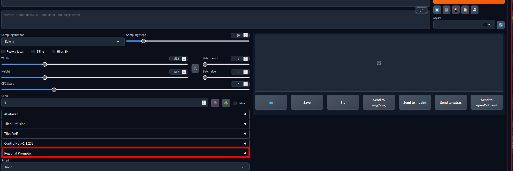
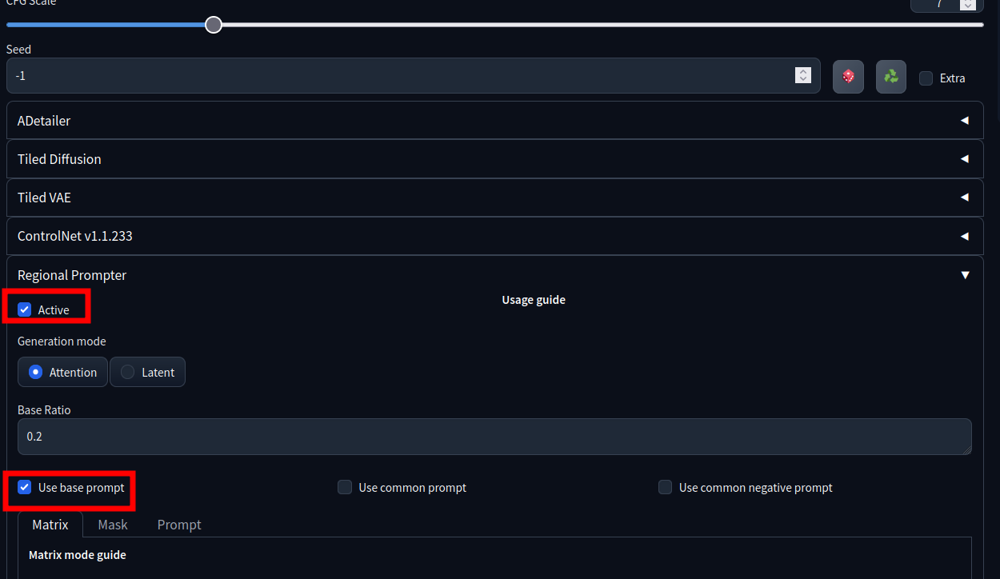
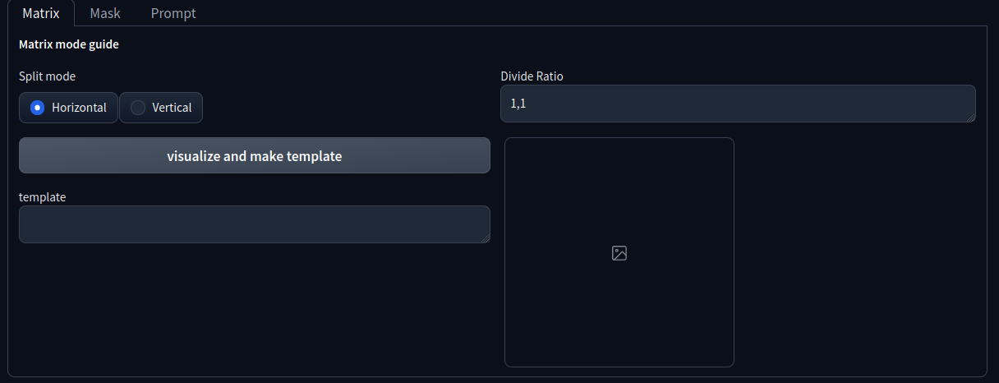
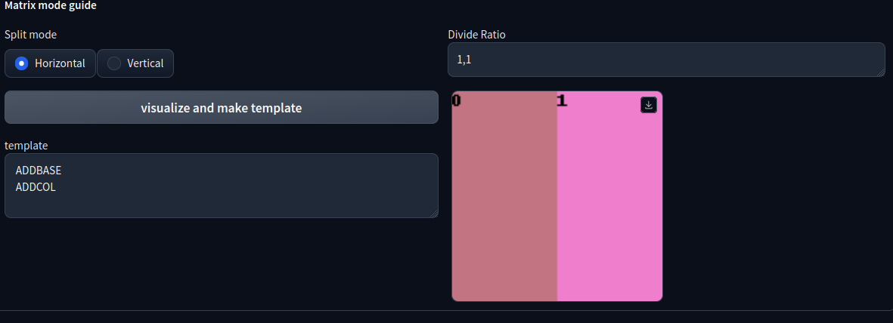
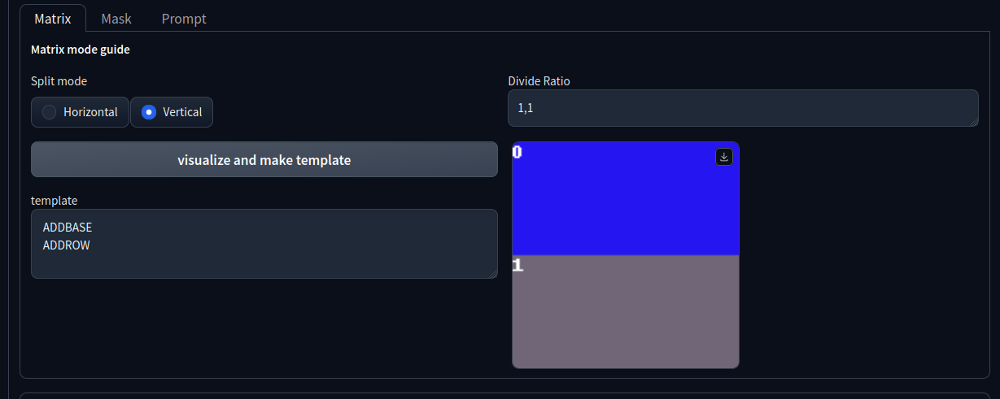
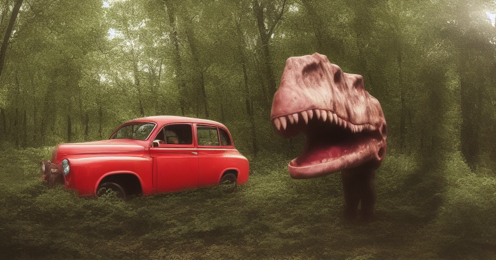
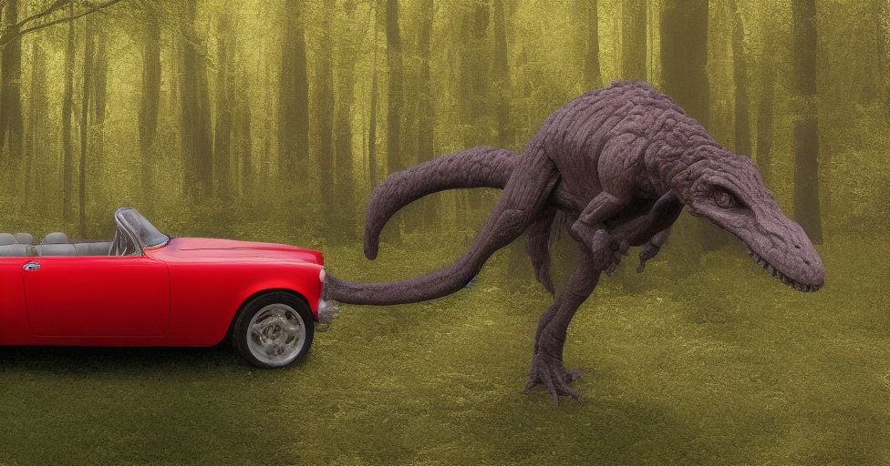
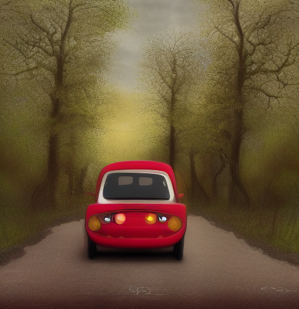

Stable Diffusion Regional Prompt es una extension para la interfaz
stable-diffusion-webui, este extension nos permite generar imagenes de tal manera que ciertos elementos esten es un espacio espefico de la imagen
generada, pero este elemento se va a colocar de tal manera que no parece agregado de forma aparte.
Es decir podemos dar un prompt especifico para cierta region y con esto se generara lo que especificamos y lo acoplara de forma natural al resto de la imagen.
Para poder utilizarlo hay que instalarlos con la pestaña de extensiones
AUTOMATIC1111, despues de instalarlo y de reiniciar el programa, en la pestaña de
txt2img tendremos la opcion de
Regional Prompter:

Al abrirla lo primero que tenemos que hacer es activar el regional prompter haciendo click en
Active y luego seleccionamos
Use base promt

Con esto ya estara listo para usarse, pero la forma en la que generamos cosas especificas por secciones es la siguiente.
En esta parte, en la de matrix, Podemos ver solo dos cosas que nos interesan:

Split Mode: La direccion principal en la cual se va a dividir la imagen.
Divide Ratio: En cuantas partes y de que tamaño se va a dividir la imagen.
El primero, puede no se muy importante, pues al final de cuentas, en cualquier modo se pueden crear divisiones verticales y horizontales, el segundo es el que considero más importante, pues en este es como vamos a dividir la imagen, por defecto tenemos el siguiente texto:
1,1.
Este texto simboliza que la imagen se va a dividir en dos partes, y ambas del mismo tamaño
Split Mode Horizontal

Split Mode Vertical

Al darle click en el boton de
Visualize and make template dos cosas pasan, primero se generara una imagen en donde con colores diferentes se mostrara com quedara dividida la imagen, este rectangulo siempre es del mismo tamaño pero se respetan las proporciones cuando se tiene un rectangulo como
imagen por ejemplo, y la segunda cosa es que se generara la template, que es lo que necesitamos colocar en el prompt para poder generar en lugares especificos, por ejemplo si queremos generar una imagen con un dinosaurio de un lado y un auto del otro, con la configuracion de
1,1 en
horizontal
tendremos el sigueinte template:
ADDBASE
ADDCOL
Entonces añadimos los propmts correspndientes:
ADDBASE A red car in the forest best quality, masterpiece
ADDCOL realistic, dinosour, open mouth, screaming
Obtenemos las siguientes imagenes


Hay que tener cuidado de darle el suficiente tamaño a la imagen para ppoder generar lo que queremos, pues si es muy pequeña podemos no tener lo que especificamos, como por ejemplo esta imagen, que fue hecha con las mismas configuraciones de la anterior pero solo con tamaño menor:
